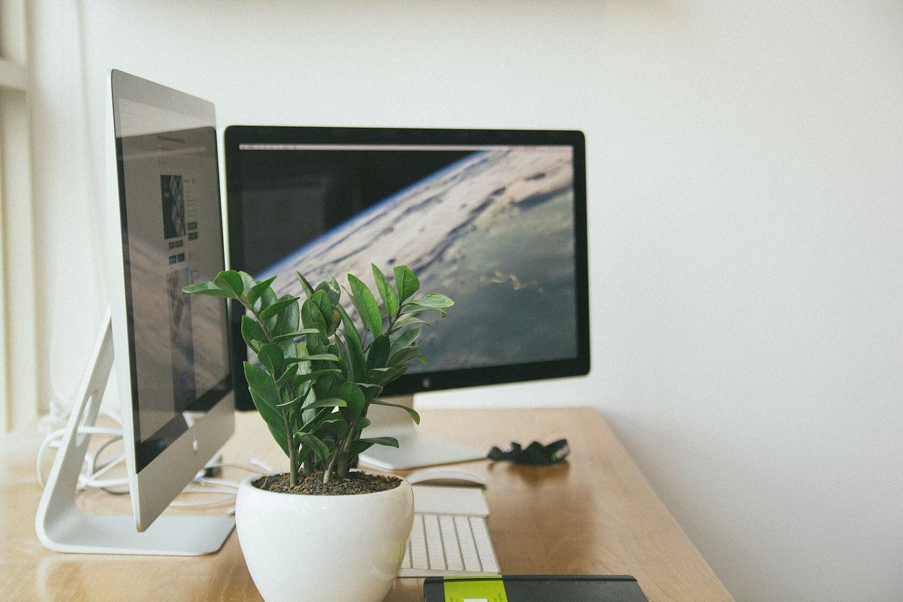

Монитор для игр: почему 144 Гц — это минимум, а не маркетинг

Если вы играете в шутеры и гонки, монитор влияет на результат не меньше видеокарты. Вот что важно, а что можно игнорировать.
60 → 144 Гц — самый заметный апгрейд
Переход на 144 Гц ощущается сразу: картинка перестаёт «размазываться» при повороте камеры. Для CS2, Fortnite, Rust и гонок — это прямое преимущество.
Параметры по приоритету
| Параметр | Что брать |
|---|---|
| Частота | 144 Гц минимум, 180–240 — запас |
| Панель | IPS (Fast IPS) — цвет и скорость |
| Разрешение | 1080p для FPS, 1440p для баланса |
| Время отклика | 1 мс (рекламное), реально ≤ 5 мс GtG |
Что игнорировать
- «1 000 000:1 контраст» — маркетинговая цифра.
- HDR на дешёвых панелях — почти не работает, не переплачивайте.
Вывод
Fast IPS 144 Гц 1440p — золотая середина. Для чистого киберспорта берите 240 Гц 1080p. Перед покупкой включите 144 Гц в настройках Windows — по умолчанию часто 60.
Проверьте, что видеокарта выдаёт столько FPS, сколько герц монитора, иначе переплата за частоту впустую.
Проверьте актуальные цены
Ссылки на маркетплейсы и сервисы ведут на проверенные предложения, для вас цена не меняется.
Найти на Маркете →